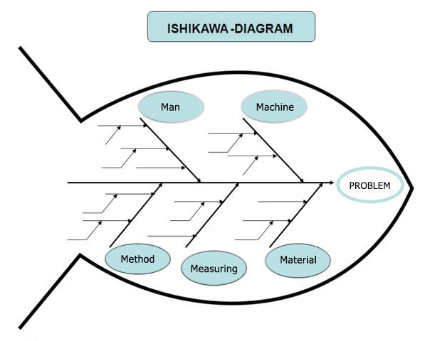
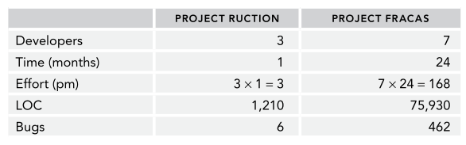
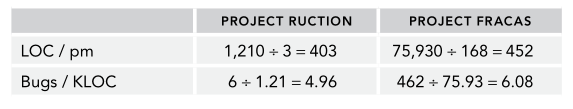

| Article Year -- 2017
| Article Year -- 2017
 | Tags --
software |
architecture |
metrics |
quality |
ishikwa diagram |
| Tags --
software |
architecture |
metrics |
quality |
ishikwa diagram |
You can't control what you can't measure. - Tom DeMarco
Bugs and system errors are most often unavoidable in any large software project and sometimes they might even go unnoticed and ship with the product. To this end, people have created a way to discover these bugs before this happens and figure out how well to prepare for the future. I'll refer to any error in the code as a "defect".
When finding and removing a defect, several things need to be understood and documented, before the defect can be fixed.
The Discoverer is whoever found the defect (a programmer, customer, etc.) It's best that it is the programmers themselves who discover the bugs and not the customers since that means the defect went past code reviews.
The Severity is a number (i.e. 1-10) that is assigned to the defect, or it could be a category, like low, medium, high. It tells how severe the defect is for the project.
Time Created tells when the defect was discovered. Was it during high-level design, low-level design, maintenance? Defects discovered earlier in the project are the most important.
Age at Fix is a number telling the time that went from when the defect was discovered until it was fixed. Next time focus on the defects that went unfixed for the longest time.
Finally, you can assign a defect to a certain task type. Examples of task types are tools, security, database, user interface, hardware, etc.
For each defect you should ask yourself 3 questions:
- How could you have avoided the defect in the first place?
- How could you have detected the defect sooner?
- For customer-discovered defects, how could you have found the defect before the customers did?
Another way to better categorize a defect into a task type, or several, is by using Ishikawa Diagrams that can track a defect all the way back to its origin point. Perhaps the defect is present in more than one task type. The diagrams help you find the root cause of the defect.  After discovering and fixing a few defects you might want to get a more overall picture of how well your project performs. This is where metrics get into the picture. These are more quantitative measurement techniques that are equally as useful.
An Attribute is a thing in your project that is measurable, like lines of code, number of comments.
A Metric is a value that you can use to study a part of your project. They are often a calculated value from your attributes and provides valuable information.
An Indicator is a sort of metric that tells something about the future of the project, instead of how it is doing right now.
You can measure anything you can put a number on, but there are certain attributes that are easier to measure than others. An attribute should be simple, measurable, relevant, objective, and easy to obtain. When you have measured your attributes you can use them to form metrics that can be used to assess the quality, reduce bugs, improve maintenance, etc. Indicators are often used as feedback to the developers to make them change how they work.
Metrics can be grouped into 2 categories: Process metrics and project metrics.
Process Metrics are used to measure the development process to help you better fine-tune your development workflow. An example would include comments per lines of code, which says something about how well the code is documented.
Project Metrics are used to measure and track the project and is used to change the overall strategy for the project. You can use them to set future goals and predict future events.
The main problem with metrics is that they only add value to the current project, but there is a way to compare how 2 different projects are doing, using Size Normalization.
Suppose you measured lines of code, number of developers, time in months, number of bugs and total effort for 2 projects.  How do we see which project performs better? We use a series of calculations to help us.  These calculations show that project Fracas was more productive in terms of lines of code per effort, but that project Ruction had less buggy code. Only do calculations that make relevant sense and then conclude something based on that. In this way, we can compare several projects to each other and perhaps decide which ones to keep and which ones to disband.
Finding and fixing bugs can be tough, so we use metrics to help us do just that. There are many more methods available for measuring all aspects of a project in high detail.


{kind=link}
{kind=link}
{kind=link}